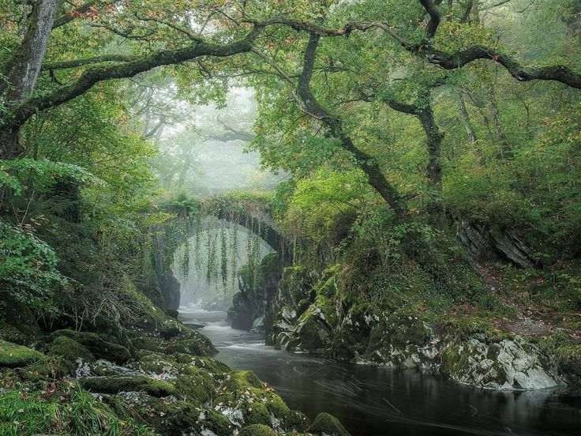
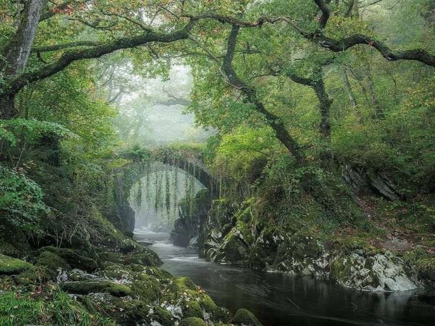

At the heart of the forest lived a family of deer.
They were gentle creatures, always in harmony with the rhythm of nature.
The father deer was proud and strong, his antlers a symbol of his authority.
The mother deer was kind and nurturing, always tending to her fawns.
And the fawns were playful and curious, always exploring their surroundings.
 

One day, while out foraging for food,
the fawns stumbled upon a beautiful meadow filled with wildflowers of every color.
They frolicked in the sunshine, chasing each other and nibbling on the sweet petals.
Suddenly, a fierce storm rolled in, bringing with it thunder and lightning.
The fawns were frightened and sought refuge in the safety of the nearby cave.
As they huddled together,
they were amazed to see the storm transformed into a magnificent display of colors and light.
The lightning lit up the sky, painting it with hues of pink, purple, and blue.
The thunder boomed, echoing through the mountains like the beating of a drum.
And the rain washed over the meadow,
washing away the dirt and leaving behind a carpet of vibrant flowers.
The fawns were in awe of the power of nature,
and they realized that even though the storm had frightened them, it was also a thing of beauty.
They promised to always remember the lesson they learned that day,
and to always be grateful for the wonders of the natural world.
And so, the fawns grew up to be strong and wise,
always appreciating the beauty of the world around them.
And the magical forest flourished, its wonders and magic never fading,
always inspiring awe and wonder in all who were lucky enough to experience it.